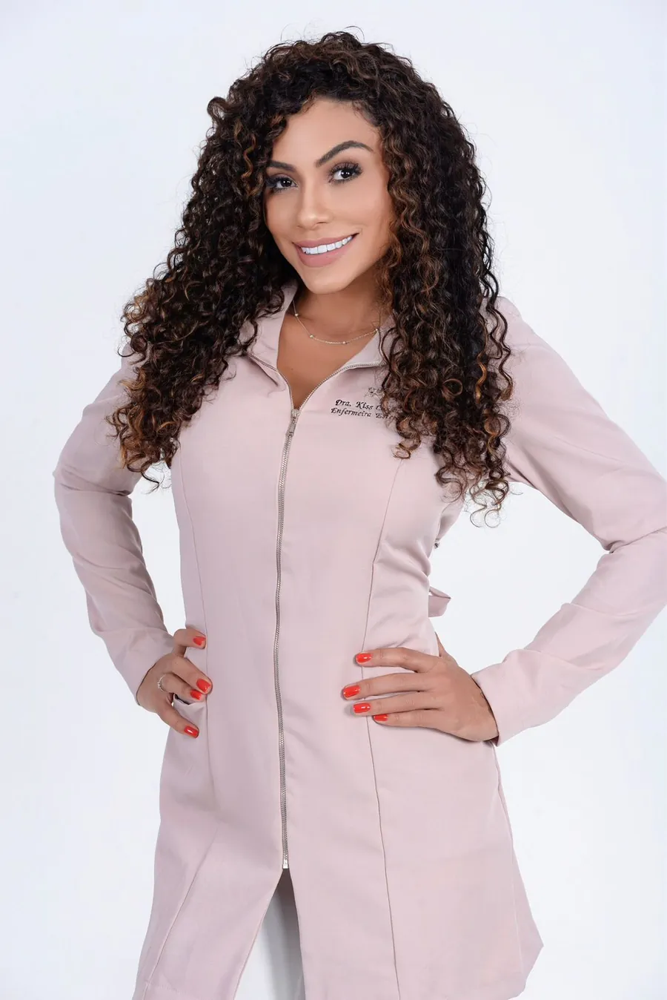

Um novo olhar sobre a sua beleza natural
Agende uma consulta-
Enfermeira estetaFormação em saúde
-
Avaliação completaFacial e corporal
-
Baseada em evidênciasTécnicas seguras
-
Equipe multidisciplinarDo pré ao pós
Sobre mim
Beleza com propósito.
Cuidado com técnica.
Olá, muito prazer! Eu sou a Dra. Kiss Cunha, e minha missão é elevar sua qualidade de vida e autoestima.
Apaixonada pela beleza e pelo bem-estar, construí minha trajetória ao lado de profissionais renomados da área. Hoje, trago essa experiência para oferecer cuidados estéticos personalizados, promovendo mais saúde e valorização de cada detalhe que faz você única.
- Atendimento personalizado
- Ética e comprometimento
- Acompanhamento do seu progresso
- Equipe dedicada
uma dose generosa de carinho.
Procedimentos
Como posso cuidar de você

Técnicas & recursos
Técnica e tecnologia a serviço da sua beleza natural
Cada plano combina os recursos certos para o seu rosto e o seu corpo, sempre a partir de uma avaliação completa.
Rosto
Toxina botulínica
Suaviza as rugas dinâmicas da testa, do contorno dos olhos e entre as sobrancelhas. Procedimento não cirúrgico, com pouco ou nenhum tempo de recuperação.
- 3 a 6 mesesde efeito
- Poucos diaspara ver o resultado
Rosto
Preenchedores com ácido hialurônico
Devolvem volume e contorno, preenchem sulcos e realçam os lábios, respeitando as proporções naturais do rosto.
- 6 meses a 2 anosde efeito
- Reversívelcom hialuronidase
Rosto e corpo
Bioestimuladores de colágeno
Estimulam o próprio colágeno para mais firmeza e melhor textura da pele, de forma gradual.
Corpo
Enzimas lipolíticas
Atuam em áreas específicas para ajudar na redução de medidas e no contorno corporal.
Rosto e corpo
Radiofrequência
Tecnologia que favorece a firmeza e a textura da pele, como parte da harmonização corporal.
Corpo
Ultrassom
Atua diretamente nas áreas tratadas, ajudando a reduzir medidas e a melhorar o contorno.
Pele
Peelings químicos
Renovam a pele e melhoram a aparência, com orientações personalizadas de cuidado.
Corpo & bem-estar
Terapias manuais
Massagens estéticas e terapêuticas que modelam, melhoram a circulação e aliviam tensões.
Não sabe qual recurso é ideal para você? A avaliação mostra o caminho.
Agendar avaliaçãoSua autoestima em primeiro lugar, sempre.
Dra. Kiss Cunha
Dúvidas frequentes
Tire suas dúvidas sobre estética avançada
Não encontrou sua pergunta? Fale comigo e eu explico cada etapa com calma.
Perguntar pelo WhatsApp01Quanto tempo dura o efeito do botox e dos preenchedores?
O efeito da toxina botulínica (Botox) geralmente dura de três a seis meses, dependendo da quantidade de produto, da área tratada, do metabolismo e da resposta do corpo. Depois desse período, os músculos recuperam a atividade aos poucos e as linhas de expressão podem reaparecer.
O preenchimento com ácido hialurônico dura de seis meses a dois anos, conforme o produto, a área e o metabolismo. Áreas de mais movimento, como os lábios, absorvem o ácido mais rápido.
02Como funciona a consulta com a Dra. Kiss Cunha?
Uma consulta individualizada e humanizada, de acordo com as suas necessidades:
- Anamnese minuciosa;
- Avaliação física facial e corporal baseada em evidências científicas;
- Orientações sobre a equipe que cuidará do caso;
- Informações sobre o pós-procedimento e os cuidados individuais, com apoio da equipe multidisciplinar.
03Como sei se sou candidata a harmonização facial ou corporal?
- Saúde geral: se você está saudável e não tem condições que aumentem os riscos do procedimento, pode ser uma candidata adequada.
- Expectativas realistas: a harmonização melhora a aparência, mas não transforma tudo nem resolve todas as questões estéticas.
- Avaliação profissional: uma especialista avalia sua estrutura facial ou corporal, conversa sobre seus objetivos e indica o melhor caminho.
- Cuidados pós-procedimento: seguir as orientações é essencial para a recuperação e para o resultado.
04Qual a diferença da harmonização feita por uma enfermeira esteta?
A enfermagem tem papel central na promoção e manutenção da saúde. Na estética, a enfermeira realiza procedimentos avançados, como preenchimentos, toxina botulínica e peelings químicos, e cuida da pele com orientações personalizadas, avaliação das suas necessidades e garantia de práticas seguras durante todo o procedimento.
A combinação de formação em enfermagem e conhecimento estético faz da enfermeira esteta uma profissional completa nesse campo.
05Quais os riscos e benefícios do botox e do ácido hialurônico?
Toxina botulínica
Benefícios
- Reduz rugas dinâmicas: testa, ao redor dos olhos e entre as sobrancelhas.
- Resultado visível em poucos dias.
- Não cirúrgico, com pouco ou nenhum tempo de recuperação.
Riscos
- Reação alérgica (rara).
- Dor, inchaço, hematoma ou sensibilidade temporários no local.
- Aparência artificial se mal aplicado.
- Em casos raros, fraqueza muscular temporária em áreas vizinhas.
Ácido hialurônico
Benefícios
- Volume e contorno: preenche rugas e sulcos e pode aumentar os lábios.
- Resultado imediato.
- Reversível: pode ser dissolvido com hialuronidase, se necessário.
Riscos
- Reação alérgica (rara).
- Assimetria ou irregularidade quando aplicado por profissional inexperiente.
- Inchaço e hematomas temporários.
- Infecção (rara).
Converse sobre todos os riscos e benefícios com uma profissional qualificada antes de decidir por qualquer tratamento.
Agende sua consulta
Vamos cuidar de você?
A consulta é o primeiro passo: avaliação completa e um plano pensado para você.
Agendar pelo WhatsApp-
WhatsApp+55 (11) 91480-1043
-
E-maildra.kisscunha@gmail.com